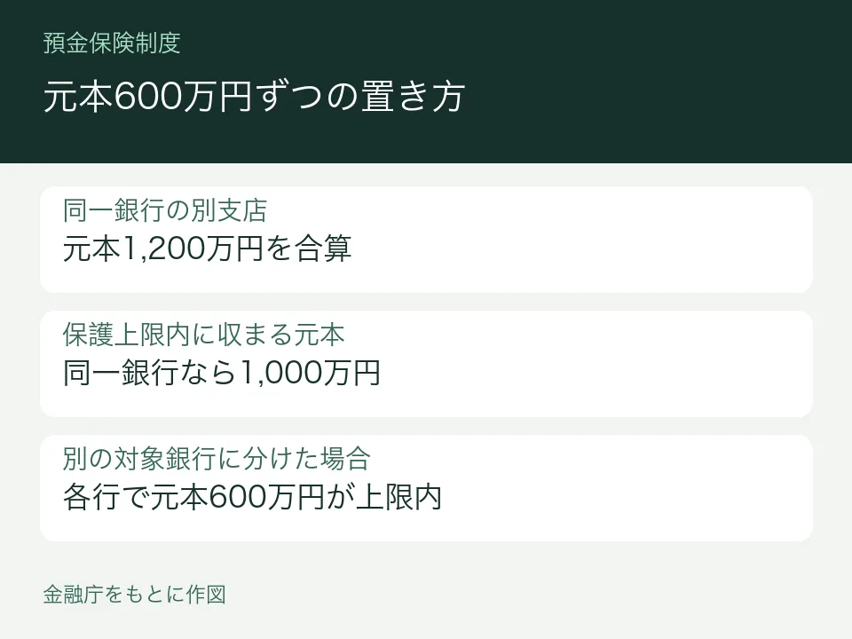
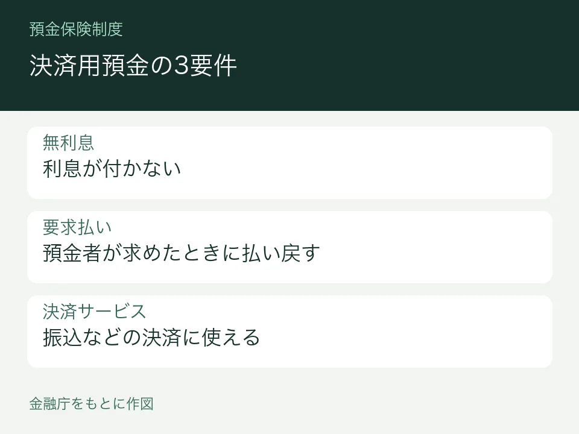

預金保険の1000万円は、一般預金等の元本について預金者1人・1金融機関ごとに適用される上限です。同じ銀行の別支店に普通預金と定期預金を置いても、同じ人の名義なら足し合わせます。対象となる別の銀行に置く場合は銀行ごとに判定し、決済用預金の要件を満たす場合は全額保護されます。2026年11月25日時点の金融庁の案内で整理します。
01支店や口座を分けるとどうなる？
利息が付く普通預金や定期預金は一般預金等に当たります。金融機関が破綻した場合、同じ名義の対象預金を合算して、元本1,000万円までと破綻日までの利息等が保護されます。
| 預金の置き方 | 制度上の集計 |
|---|---|
| 同じ銀行・同じ支店で普通預金と定期預金 | 同じ人の名義なら合算 |
| 同じ銀行・別支店で普通預金と定期預金 | 同じ人の名義なら合算 |
| 別々の対象銀行で普通預金と定期預金 | 各銀行で判定 |

支店名や口座番号が異なっても、金融機関が同じなら合算します。 複数の口座をアプリで別々に管理しているときも、確認は金融機関名から始めます。
02600万円ずつならいくら保護される？
例同じ人が利息付き普通預金600万円と定期預金600万円を持ち、ほかの預金や合併特例がないと仮定します。比較する金額は元本です。
同じ銀行なら元本は600万円＋600万円＝1,200万円です。上限との差は1,200万円−1,000万円＝200万円。制度で保護される元本は1,000万円で、超過分は破綻した金融機関の残余財産の状況によって一部が支払われない場合があります。対象となる別の銀行に600万円ずつ預けているなら、各銀行で600万円≦1,000万円と判定します。
上限を超えた元本の扱いは、破綻した金融機関の財産の状況で決まります。 この試算は口座をどこに置いたかで制度上の集計がどう変わるかを示しています。
03全額保護される決済用預金の条件
決済用預金には、無利息、要求払い、決済サービスを提供できる、という3要件があります。要求払いは、預金者が払い戻しを求めたときに応じる性質です。当座預金や、要件を満たす無利息の普通預金が該当します。

自分の口座が決済用預金に当たるかは、金融機関の商品説明で確認します。 給与の受取や料金の引き落としに使っている口座でも、利息が付くかどうかで扱いが変わります。商品説明で判断できなければ、金融機関に商品名を伝えて確認します。
04手元の預金を確認する手順
- 口座一覧を開き、金融機関名、名義、商品名、元本を並べます。同じ銀行に預けた定期預金も表に入れます。
- 各商品について預金保険の対象か、一般預金等か決済用預金かを確認します。
- 一般預金等の元本を、同じ名義・同じ金融機関ごとに集計します。満期で定期預金が普通預金に移った場合は、移動前と移動後を二重に計上しないようにします。
金融機関の合併や事業の全部の譲受けでは、その後1年間に限り保護限度額の特例があります。利用している銀行が該当する場合は、通常の集計に進む前に公式のお知らせで適用時期を確認します。
05よくある質問
同じ銀行の別支店に預けても合算される？
同じ名義の一般預金等は、同じ銀行の別支店に預けた分も合算します。
預金保険の1000万円に利息も含む？
1,000万円は元本の上限です。保護対象の元本に係る破綻日までの利息等も保護されます。
1000万円を超えた分はどうなる？
金融機関の残余財産の状況に応じて支払われます。一部が支払われない可能性があります。
06まとめ
結論一般預金等は同じ人・同じ金融機関ごとに合計し、決済用預金は商品ごとに該当するかを確認します。
日常的に動かす普通預金と満期まで置く定期預金を両方集計すると、同じ銀行に置いている元本の総額が見えます。